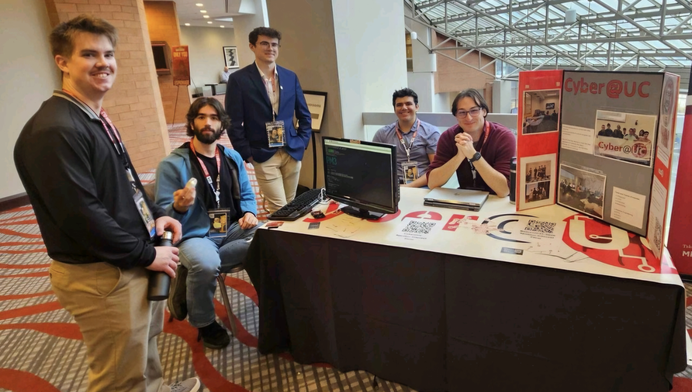
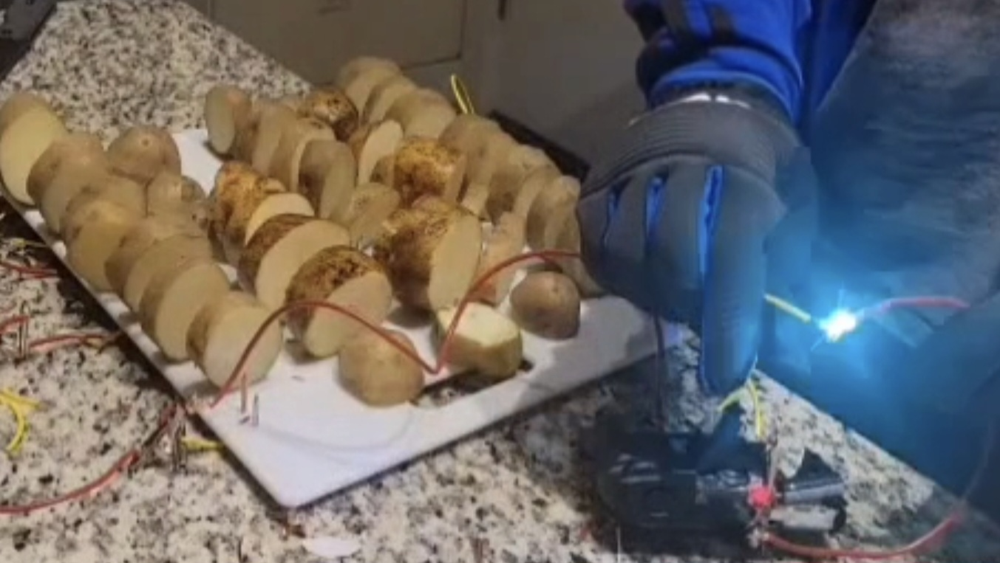

Projects Over the Years.
This is a catalogue of various projects I've completed over the past few years. This is by no means a comprehensive list, but shows some of the more interesting/well documented ones.
Behold, My Stuff:
RFID Cloning Demo
What started as a small demo for Cyber@UC hacking lab where I scanned the UID of the campus access cards turned into a much larger project in which I set up a system to recognize and clone various different NFC & RFID badges. This advanced demo was shown at Queen City Con as an exhibitor. Sadly no video of the final result exists, but the code deemed safe to publish is publicly available on my github. Cyber@UC has many talented developers and I was honored that they chose my work to show off that weekend.

Lockpicking streak
In the months leading up to QCC I set myself a challenge to message the CTF team leader one video per day of me picking a lock. By the end I got creative with several of the videos to keep them interesting. In the end I sent 100 videos.
Potazer
One of my first technical projects worth sharing was done back in 2024. I had an idea to make a powerful potato battery and connect it to the capacitor from a broken camera. The result was a 5lb potato battery capable of dealing a 525v electric shock strong enough to leave a small (but permanent) scar on my finger. I found that a potato could be cut into four pieces without losing wattage, and boiling them in distilled water doubled the current drawn. Distilled water was needed to prevent shorts.
